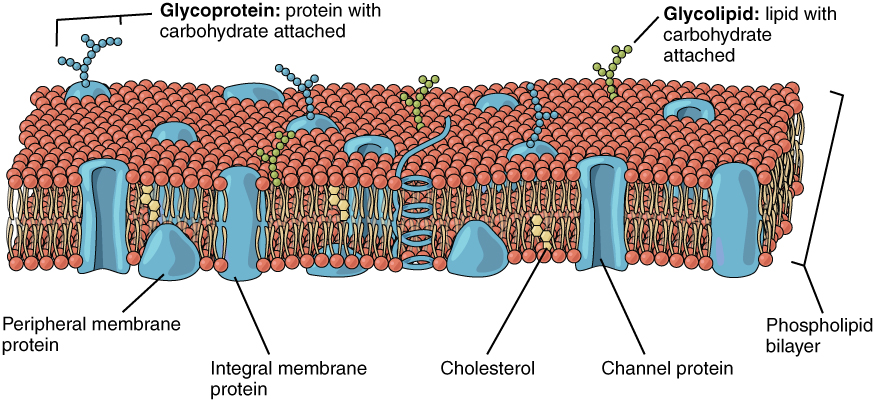
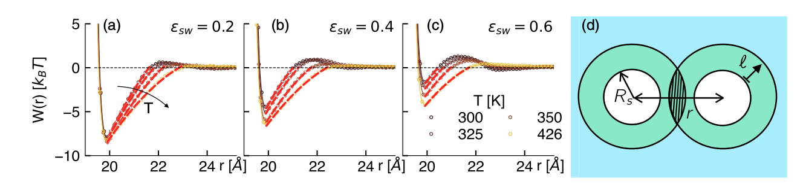
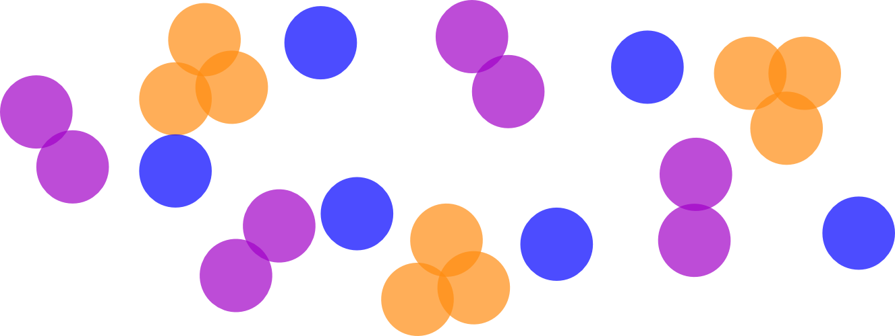
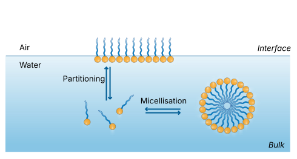
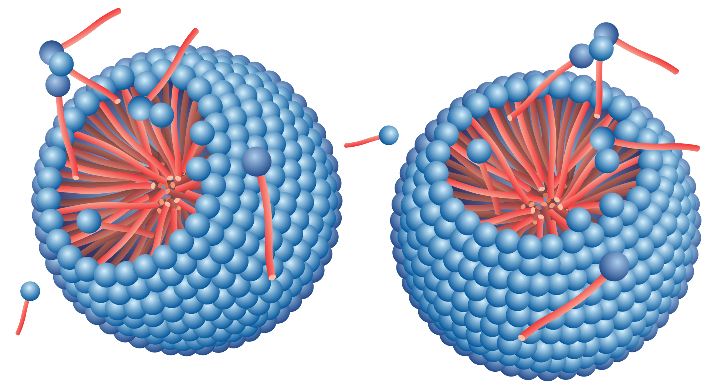
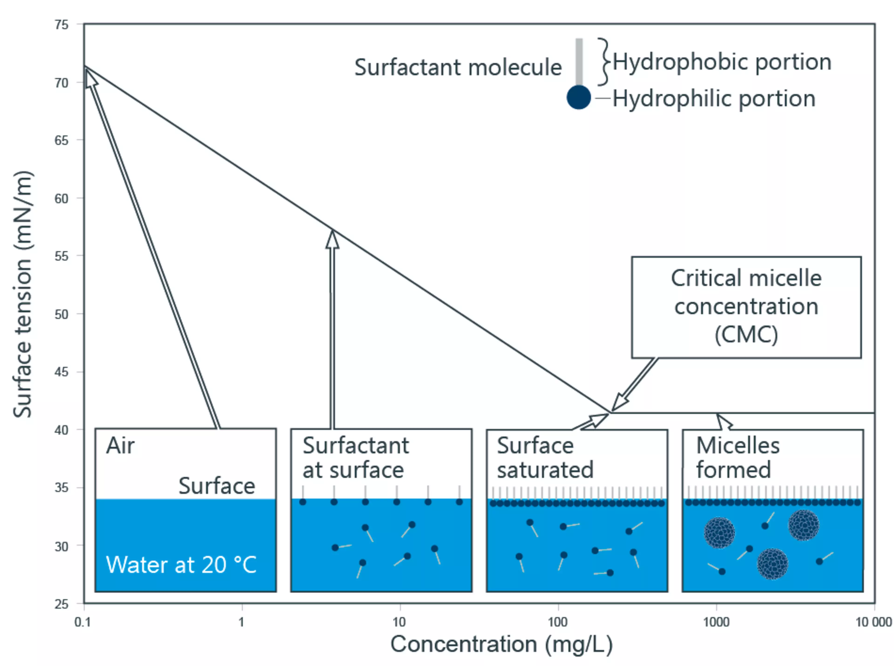
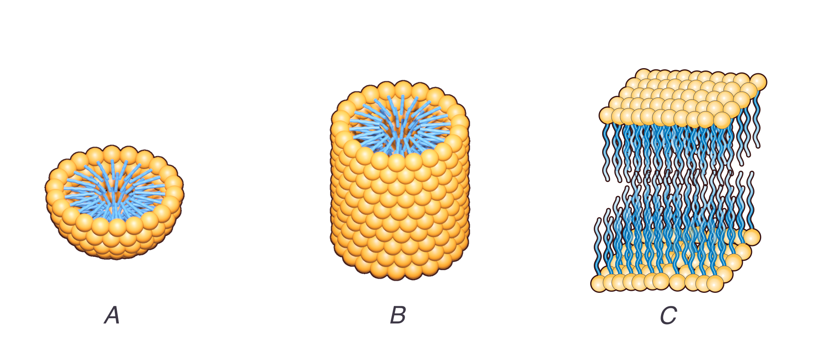
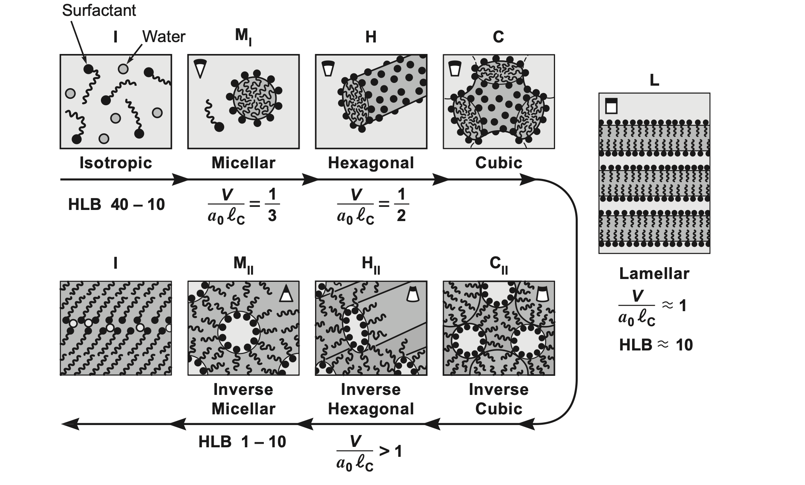

Surfactants
Water is the standard solvent for a lot of chemistry and (almost all) biology.
Molecules in water can be classified by their affinity to water:
Amphiphiles are molecules that contain both hydrophilic and hydrophobic parts. They include:
Schematic model of a surfactant

Phospholipid bilayers form the cellular membranes. They self-assemble!
The hydrophobic interactions is a topic of active research.
Various approaches

Effective hydrophobic interactions between spherical solutes of variable solute-solvent affinities \varepsilon_{sw}. A depletion-like construction produces a surface tension-controlled interaction. from Wilding & Turci PRR (2025)
In all cases, the hydrophobic effect originates in fluctuations of the solvent, i.e. the way the solvent explores the available configuration.
// This is ObservableJS code
// You can run at observableehq.com or convert it to an equivalent (and faster?) Python version if you like
viewof simulation = {
// --- Parameters ---
const width = 40, height = 40;
const chainLength = 3;
const chainsToCreate = numChains;
const T = temperature;
// const numChains = 10;
const E_TS = 1.0; // tail-solvent energy (solvophobic)
const E_HS = -1.5; // head-solvent energy (solvophilic)
// const T = 0.1; // temperature (kT units)
// --- Initialize grid and chains ---
let grid = Array.from({length: width}, () => Array(height).fill(null));
let chains = [];
// Periodic boundary helper
function mod(n, m) { return ((n % m) + m) % m; }
function getNeighbors(x, y) {
return [
{x: mod(x - 1, width), y: y},
{x: mod(x + 1, width), y: y},
{x: x, y: mod(y - 1, height)},
{x: x, y: mod(y + 1, height)}
];
}
function placeChains() {
for (let id = 0; id < numChains; id++) {
for (let tries = 0; tries < 100; tries++) {
let x = Math.floor(Math.random() * width);
let y = Math.floor(Math.random() * height);
if (grid[x][y]) continue;
let chain = [{x, y, type: 'head'}];
grid[x][y] = {id, type: 'head'};
let ok = true;
for (let i = 1; i < chainLength; i++) {
let last = chain[chain.length - 1];
let nbs = getNeighbors(last.x, last.y).filter(p => !grid[p.x][p.y]);
if (nbs.length === 0) { ok = false; break; }
let next = nbs[Math.floor(Math.random() * nbs.length)];
chain.push({...next, type: 'tail'});
grid[next.x][next.y] = {id, type: 'tail'};
}
if (ok) { chains.push({id, segments: chain}); break; }
else { chain.forEach(p => grid[p.x][p.y] = null); }
}
}
}
function energy(seg) {
let solventNbs = getNeighbors(seg.x, seg.y).filter(p => !grid[p.x][p.y]).length;
return seg.type === 'head' ? solventNbs * E_HS : solventNbs * E_TS;
}
function attemptMove(chain) {
const forward = Math.random() < 0.5;
const tail = forward ? chain.segments[0] : chain.segments.at(-1);
const head = forward ? chain.segments.at(-1) : chain.segments[0];
const options = getNeighbors(head.x, head.y).filter(p => !grid[p.x][p.y]);
if (options.length === 0) return;
const next = options[Math.floor(Math.random() * options.length)];
const dE_old = energy(tail);
grid[tail.x][tail.y] = null;
const dE_new = energy({...next, type: tail.type});
grid[tail.x][tail.y] = {id: chain.id, type: tail.type};
const deltaU = dE_new - dE_old;
const accept = deltaU < 0 || Math.random() < Math.exp(-deltaU / T);
if (accept) {
grid[tail.x][tail.y] = null;
grid[next.x][next.y] = {id: chain.id, type: tail.type};
if (forward) {
chain.segments.shift();
chain.segments.push({...next, type: tail.type});
} else {
chain.segments.pop();
chain.segments.unshift({...next, type: tail.type});
}
}
}
// --- Visualization ---
const svg = d3.create("svg")
.attr("viewBox", `0 0 ${width} ${height}`)
.style("width", "400px")
.style("height", "400px")
.style("border", "1px solid #ccc");
const g = svg.append("g");
function draw() {
const data = chains.flatMap(c => c.segments);
g.selectAll("circle")
.data(data, d => `${d.x}-${d.y}`)
.join("circle")
.attr("cx", d => d.x + 0.5)
.attr("cy", d => d.y + 0.5)
.attr("r", 0.45)
.attr("fill", d => d.type === "head" ? "blue" : "red");
}
// --- Main Loop ---
placeChains();
draw();
let running = true;
const button = html`<button>⏸ Pause</button>`;
button.onclick = () => {
running = !running;
button.textContent = running ? "⏸ Pause" : "▶ Resume";
};
(async () => {
while (true) {
if (running) {
for (let i = 0; i < chains.length; i++) {
const c = chains[Math.floor(Math.random() * chains.length)];
attemptMove(c);
}
draw();
}
await new Promise(r => setTimeout(r, 50));
}
})();
return html`<div>${button}<br>${svg.node()}</div>`;
}Surfactants are at the molecular scale so they are nanometer sized
The amphiphilic structure means that special orientations can be achieved to satisfy the energetic constraints.
The molecules spontaneously form structures: this is called self-assembly.
Underlying phase transitions typically drive the self-assembly.
Consider a generic problem of aggregation of particles (generic)
Simple model: we have cluster of size N and a free energy cost \epsilon_N pto add a particle to the cluster.
Let \mu_1 and \mu_N be the chemical potential of isolated particles and aggregates of size N respectively.
In equilibrium, \mu_1 = \mu_N := \mu
We can express \mu in terms of
Example

___
The uniform chemical potential is then
\mu = \text{\{energy per particle in aggregate of size N\}} + \text{\{entropy of mixing per particle in aggregate of size N\}}
or \mu = \epsilon_N + \dfrac{k_B T}{N}\ln{\dfrac{X_N}{N}}
From \mu = \epsilon_N + \dfrac{k_B T}{N}\ln{\dfrac{X_N}{N}}
we can rewrite this as
X_N = N \exp{\left( \dfrac{N(\mu-\epsilon_N)}{k_BT}\right)}
and eliminate \mu by evaluating the expression for for N=1 and plugging it back to get
X_N = N X_1^N \exp{\left( \dfrac{N(\epsilon_1-\epsilon_N)}{k_BT}\right)}
The fraction of solutes in the aggregated state is large only if \epsilon_1>\epsilon_N., i.e. there is an energetic advantage.
X_N = N X_1^N \exp{\left( \dfrac{N(\epsilon_1-\epsilon_N)}{k_BT}\right)}
means that knowing the form of \epsilon_N is key to predicting aggregation behaviour.
\epsilon_N = \dfrac{G_N}{N} = \epsilon_\infty +\dfrac{1}{N}\gamma r^2 =\epsilon_\infty +\gamma\left(\dfrac{v^2}{N}\right)^{1/3}
which is a monotonically decreasing function of N.
Define \alpha k_B T = \gamma v^{2/3} and extract a relation between X_N and X_1 parametrised solely by \alpha, i.e.
\text{number of aggregates of size N per unit volume} = \dfrac{X_N}{N}\sim (X_1 e^{\alpha})^N
\text{number of aggregates of size N per unit volume} = \dfrac{X_N}{N}\sim (X_1 e^{\alpha})^N This presents us with a few cases depending on \alpha= \gamma v^{2/3}/k_B T
\text{CAC} = X_1^* = e^{-\alpha} = \exp\left(-\frac{\gamma v^{2/3}}{k_B T}\right)
Earlier we assumed that the free energy per particle was \epsilon_N = \epsilon_\infty +\gamma\left(\dfrac{v^2}{N}\right)^{1/3} a monotonically decreasing function of N.
For surfactants, it is not necessarily the case.

Surfactants in solution: normally, this is done in water in the presence of an interface with air. Due to their nature as amphiphiles, the surfactants typically sit at the air-water interface in a dynamical, equilibrium process that exchanges monomers between the bulk and the surface. The bulk surfactants, when the concentration is larger than a critical value, also self-assemble into micellar structures, which are at equilibrium with the isolated single surfactants.
The addition of surfactants to water initially reduces the water-air surface tension, but when the surface is saturated, further addition leads to crossing the a critical micellar concentration (CMC) and micelle formation.
The aggregation in water follows specific patterns:
The structure on the micelle surface (formed by the heads) is disordered and fluid-like, similar to a 2D liquid.

Schematic of micelles (from DataPhysics Instruments).

Surface tension of a surfactant solution with increasing concentration, formation of micelles, from Kruss Scientific
Geometric model of a surfactant molecule:
A balance between energy and entropy leads to different self-assembled structures .

Different types of self assembled structures: (A) spherical micelles, (B) cylindrical micelles and (C) bilayers.
For a spherical micelle of radius R with aggregation number N , the total volume and surface area are given by
\begin{gathered} N v=\frac{4 \pi}{3} R^{3} \\ N a_{0}=4 \pi R^{2}\end{gathered}
Therefore \dfrac{v}{a_{0}}=\dfrac{R}{3}<\dfrac{l_{c}}{3}
where we used the fact that the radius R cannot be larger than the critical chain length \mathrm{l}_{\mathrm{c}}. We thus obtain for the critical packing parameter P
P=\frac{v}{a_{0} l_{c}}<\frac{1}{3}
For a cylindrical micelle the total volume and surface area are given by N v=\pi R^{2} L
and
N a_{0}=2 \pi R L
Therefore \dfrac{v}{a_{0}}=\dfrac{R}{2}<\dfrac{l_{c}}{2} again using R<l_{C}.
We thus obtain for the critical packing parameter P=\dfrac{v}{a_{0} l_{c}} that \dfrac{1}{3}<P<\dfrac{1}{2}
Below the lower limit spherical micelles are formed.
For a bilayer (with separation D between the layers) the total volume and surface area are given by
\begin{aligned} & N v=A D \\ & N a_{0}=2 A \\ & \frac{v}{a_{0}}=\frac{D}{2}<l_{c} \quad\left(\text { using } D<2 l_{c}\right) \end{aligned}
We thus obtain for the critical packing parameter P=\dfrac{v}{a_{0} l_{c}} that \dfrac{1}{2}<P<1
Below the lower limit cylindrical micelles are formed.

Mesophases formed by surfactants as we vary the packing parameter P=\dfrac{v}{a_{0} l_{c}} , from Israelachvili, J. N., Intermolecular and Surface Forces, 3rd Edition, Academic Press, 2011.